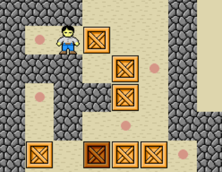
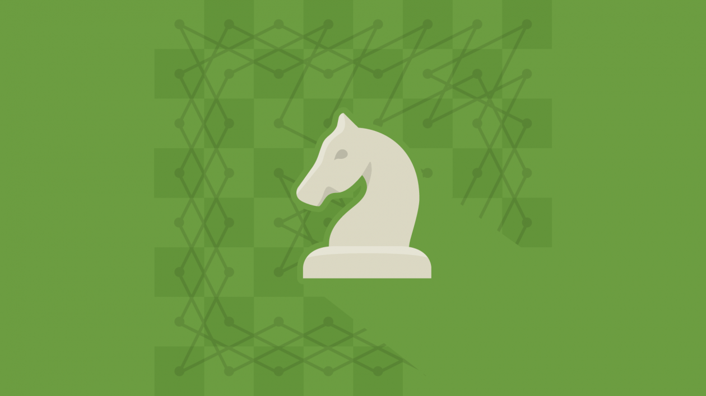
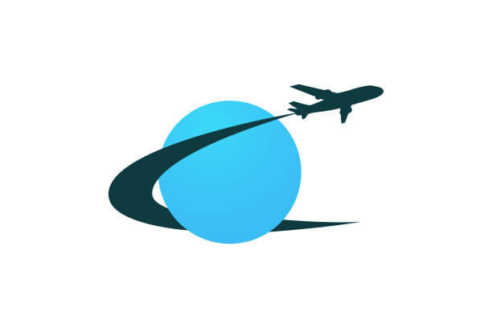
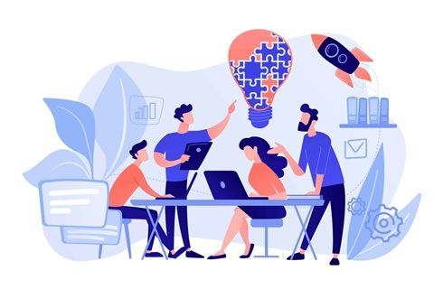

Divi
Le Gall
Étudiant en BUT informatique - IUT de Lannion
Bonjour je m'appelle Divi Le Gall, j'ai 20 ans et je suis étudiant à l'IUT de Lannion en BUT Informatique. Originaire de Brest, je suis actuellement à la recherche d'une alternance en developpement d'application dans la region Brestoise.
Formation
BUT Informatique
IUT de Lannion — Université de Rennes
Baccalauréat Général
Lycée Charles de Foucauld — Brest
Acquis
Front-end
Back-end
Outils
Compétences

Développer des applications informatiques simples
Réalisation du jeu sokoban dans un terminal

Appréhender et construire des algorithmes
Exploration du problème du cavalier en langage python

Installer et configurer un poste de travail
Réalisation d'une chaine de traitement de fichiers automaitisée à l'aide de Docker
Concevoir et mettre en place une base de données à partir d'un cahier des charges client
Réaliser la base de données d'un comparateur d'offre d'électricité

Identifier les besions métiers des clients et des utilisateurs
Réalisation d'un site vitrine touristique pour un ministère du tourisme

Identifier ses aptitudes pour travailler dans une équipe
Etude de la responsabilité sociétale des entreprises
Contact
Me joindre
Vous avez un projet, une question ou une opportunité ? N'hésitez pas à me contacter !